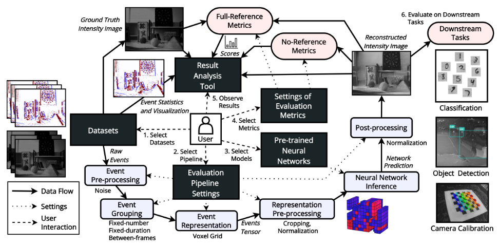
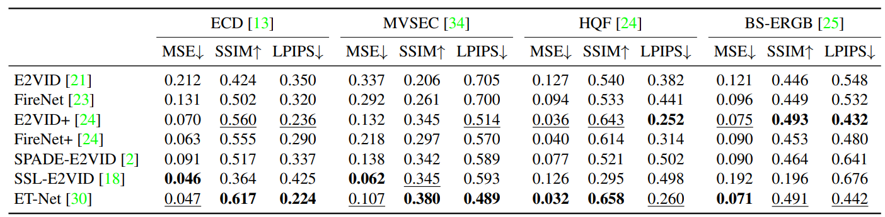
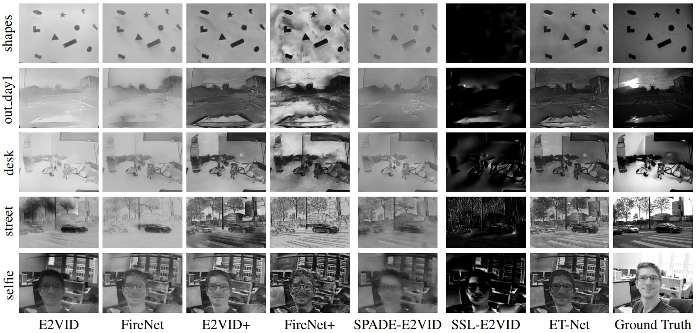
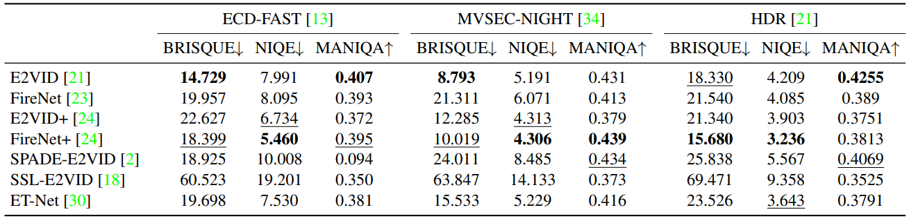
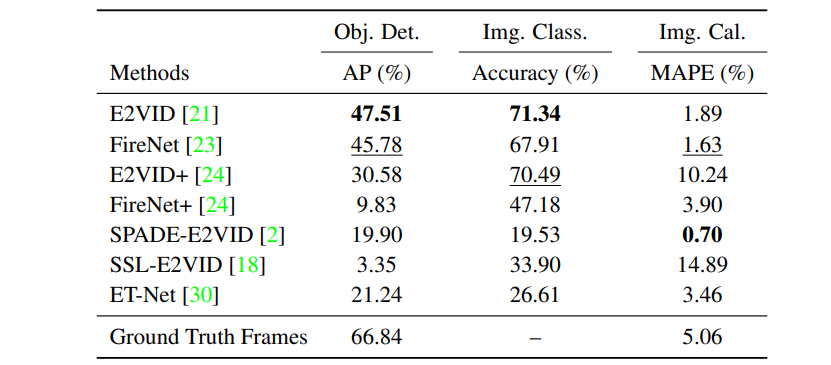
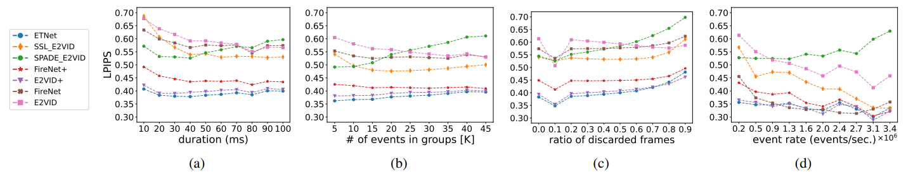

EVREAL:Towards a Comprehensive Benchmark and Analysis Suite for Event-based Video Reconstruction
EVREAL: Towards a Comprehensive Benchmark and Analysis Suite for Event-based Video Reconstruction
CVPRW 2023 [paper](2305.00434.pdf (arxiv.org)), [code](ercanburak/EVREAL: EVREAL: Towards a Comprehensive Benchmark and Analysis Suite for Event-based Video Reconstruction (CVPRW 2023) (github.com))
Abstract:
事件流对human来说不太好理解，因此需要intensity重构，最近的一些深度学习工作体现出了重构的意义，但这个问题并没有被完全解决。为了更好的对比不同方法，标准化evaluation protocols与不同的测试集是有必要的。我们提出了一种统一的评估方法，并介绍了一个名为EVREAL的开源框架，对提出的各种基于事件的视频重建方法进行了全面的benchmark测试与分析。基于此，我们对sota方法进行了详细分析，并对这些方法在不同设置，具有挑战性的场景和下游任务的性能提供了有价值的见解。
Introduction:
由于缺乏标准的评估程序，很难公平地比较不同方法的性能。评估程序的细节有时没有明确定义，即使每个小细节都可能显著地改变结果，这激发了对开放源代码和用于评估的标准化协议的需求。除了定理标准化协议以外，还需要一个大的真实数据集，涵盖现实生活中的各种情况，如ImageNet和MSCOCO等，基于事件的视觉是较新的领域，没有这样的数据集，局限于特定的场景与领域。
事件数据的优势是在光照不足或快速运动的地方有效成像，因此需要在这些条件下进行评估。然而dv在这些场合很垃圾，因此没法有监督量化。正常情况下用LPIPS，PSNR和SSIM，而且LPIPS作为一个full-reference metric，在distortions上训的，而这在事件重构数据中不常见。
重建是复杂的任务，有许多变量，包含传感器噪声，参数，事件产生率等等，现有方法没有探究在这些参数上的robustness。事件相机的一个优势是低延时和非冗余数据流，因此为了实时，计算效率与视觉质量同样重要，因此模型太大也不合适。
我们提出EVREAL，基于事件的视频重建评估分析库，提供了统一的evaluation pipeline对预训练的nn进行测试并提供结果分析工具来可视化及比较重建分数。我们用大量真实世界的测试序列，各种全参考和无参考的图像质量指标，在快速，低光照，高动态范围等具有挑战性的场景进行定量与定性分析，并验证不同设置的鲁棒性。还整了些下游任务。
几个贡献：
- 统一评估方法与开源框架
- 快速、低光照、大动态等挑战性测试集
- 在不同设置下的鲁棒性，如事件率，常量稀疏度等
- 下游任务
Methodology of Evaluation and Analysis
2.1. Task Description：
重建任务，没啥好说。
2.2. Evaluation Framework and Pipeline：
EVREAL实现了几个标准化组件，如下图，包含事件预处理、事件分组、事件表示、表示处理和图像后处理。包含了评估重构视频中每帧视觉质量的组件，分为全参考指标和无参考指标。前者用于优质gt，后者用于trash gt。EVREAL还包含一个分析工具。给定几种方法生成的一组rec，收集gt frame，事件可视化，事件率统计数据和度量的瞬时值。随后生成一个输出视频，时间同步显示，包括定量指标。
我们的方法受限场景以及失败案例有特别价值，例如，由于方法的顺序性，能够揭示噪声重建对于未来重建的影响。这些场景能够从定量度量图中直观识别。

Event pre-processing. 事件预处理，包括时序下采样和添加人工事件噪声，增强鲁棒性。
Event grouping. 孤立事件有限，因此处理为整体，有几个方法：
- Fixed-number: 每个事件分一组，组的形成速率根据传入事件速率变化。
- Fixed-duration: 每时间间隔分一组，每个组的事件数根据传入事件速率变化。
- Between-frames: 有gt帧的话，可以将连续帧间的每个事件归为一组。基础帧以固定速率到达，该情况其实是按时间间隔分的特殊情况。不过连续帧间的时间差可能并不固定，因为真实数据集中相机曝光时间不同。
Event representation. 为了利用CNN架构处理事件，常用方法是放进网格，如voxel grid。
Representation pre-processing. 形成表征后，对事件进行预处理，如裁剪或归一化，本文不提。
Neural network inference. pytorch
Post-processing. 后处理，如spade做的robust最大最小归一化，本文不后处理。
2.3. Tested Approaches：
我们比较了文献中的七种方法，基于PyTorch的开源模型代码和预训练模型。这些方法包括E2VID[21]、FireNet[23]、FireNet+和E2VID+[24]、SPADE-E2VID[2]、SSL-E2VID[18]和ET-Net[30]。需要注意的是，E2VID+和SSL-E2VID的深层网络架构与E2VID相同，FireNet+的深层网络架构与FireNet相同。
在这里，我们利用作者公开分享的预训练模型，并在相同的数据集上在通用的实验评估设置下对它们进行评估。
2.4. Quantitative Image Quality Metrics：
为了评估，用全参考的和无参考的指标，全参考需要gt，无参考不需要gt，直接给重构图像就行。全参考用：MSE，SSIM，LPIPS；无参考用：BRISQUE，NIQE和MANIQA。dv没法用时用这些度量。BRISQUE和 NIQE是传统度量，采用hand-crafted特征，计算与自然场景统计特征的一致性，考虑各种合成的和真实的distortions，如模糊，噪声和压缩等。另一方面，MANIQA时基于深度学习的方法，采用transformer架构，端到端训练，以评估感知图像质量，同时特别关注nn输出中的distortion。不做直方图均衡！！！
2.5. Datasets：
采用三个常用的数据集，ECD（也就是IJRR），MVSEC和HQF。此外，我们使用BS-ERGB（Beam Splitter Event and RGB）中的handled序列。用全参考指标来评估模型性能。在一些挑战性场景中使用无参考指标，包括快速运动、低光照和大动态范围场景。
具体来说，使用ECD的后部分，摄像机的快速运动（ECD-FAST），MVSEC的夜间驾驶序列（MVSEC-NIGHT），以及来自e2vid中的的HDR序列。
2.6. Robustness Analysis：
为了分析影响时间重建性能的因素，考虑几个变量：event rate，event tensor sparsity，image reconstruction rate，temporal irregularity四个因素。利用LPIPS在数据集常用序列中验证。
Event rate. 为评估事件率的鲁棒性，采用帧间事件分组（between-frame），并收集事件率的统计数据，以每秒事件数为单位。用网络重建并计算每个时间步长的LPIPS。我们将event rate spectrum划分为十个等间隔的bin，并计算不同方法每个bin的LPIPS。以此评估方法在不同事件率下的性能，确定对事件率的鲁棒性。
Tensor sparsity. 事件张量的稀疏性，使用固定数量分组（fixed-number），和1ms的tolerance（容差）进行实验。将gt与rec相匹配，该方法中每组的事件数量相同，产生具有相同稀疏度的事件张量。进行9次不同实验，事件数从5k到45k，然后算平均LPIPS。
如果场景中存在慢动作或少量纹理，固定事件数分组会导致跨越较长的时间。此外，事件相机的运动和纹理可能集中在小区域中，不会均匀分布，这种情况下，在表征中的时间离散化会压缩更多时间信息。容易导致模糊等伪影。
Reconstruction rate. 帧重建率对方法性能的影响，使用固定时间间隔（fixed-duration）分组，每秒生成固定数量的帧，进行10次实验，每次实验分组持续时间从10ms到100ms，帧重建速率从10FPS到100FPS。使用1ms容差来匹配帧。计算LPIPS，看不同帧速率下的性能。
Temporal irregularity. 评估不规则时间间隔生成帧时的鲁棒性，从每个序列中除去一定百分比的基础gt帧并使用帧间间隔（between-frame）的事件分组，进行10次实验，丢弃率从0.0到0.9不等，计算LPIPS。
2.7. Analysis on Downstream Tasks：
目标检测，图像分类，相机标定三个下游任务。
3. Evaluation Results and Discussion
下表给出了四个数据集上重建的定量结果，用的时全参考指标MSL。ET-Net和E2VID+是最好的。自监督的ssl居然在ECD和MVSEC有最好的MSE，我只能说这个指标不太行。

下图为定性结果。ECD和MVSEC的曝光不足，SSL的重建非常暗，MSE垃圾指标。

下表是无参考指标BRISQUE，NIQE和MANIQA第快速运动、低光照和高动态范围的挑战性场景进行的定量分析，居然是E2VID和FireNet+最好，SPADE和SSL最低。有趣的是，标准数据集上分数最高的ET-Net在这些数据集上不够好。说明标准数据集不足以衡量模型真正的性能。

下表是下游任务上的定量结果，E2VID在检测和分类上最好，FireNet二三名，spade前俩垃圾，标定最好。有趣的是，相机标定重构后比gt要好？逆天。

下图是鲁棒性分析的LPIPS表格，a表示事件重建率，ET-Net和E2VID+非常稳定，其他方法只在某些地方好。b表示张量稀疏度，组内事件数增加时，spade就变垃圾了，其他的还好。c是时间不规则性，当丢掉10%gt时，所有方法都有提升，说明原始事件分组不是最优的。事件率增加时，spade变垃圾，其他都变好。

4.验证集划分
| ECD/IJRR | normal | fast |
|---|---|---|
| boxes_6dof | 109-434 | 435-1296 |
| dynamic_6dof | 107-424 | 425-1267 |
| poster_6dof | 114-453 | 454-1356 |
| shapes_6dof | 114-453 | 454-1354 |
| calibration | 119-475 | |
| office_zigzag | 114-246 | |
| slider_depth | 26-64 |
| MVSEC | normal | night |
|---|---|---|
| indoor_flying1234_data | outdoor_night1_data | |
| outdoor_day12_data | outdoor_night2_data | |
| outdoor_night3_data |